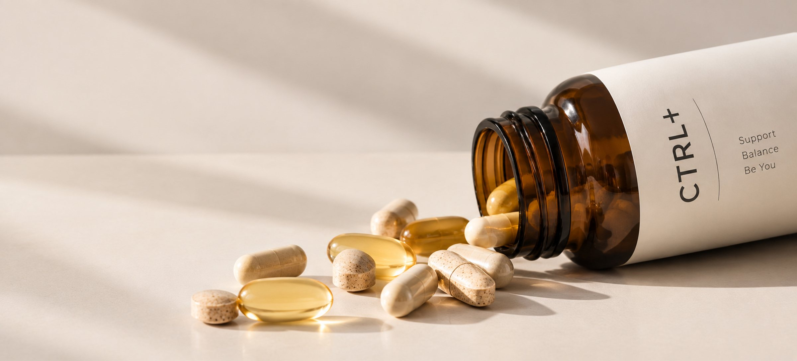

Od pomysłu do...rezygnacji, jak podjąć trudną decyzję na podstawie danych
- Moja rola
- Product Designer
- Czas
- 06–07.2021
- Obszar
- Product Discovery

Product discovery dla nowego produktu na rynku suplementów diety
- 122 Odpowiedzi w ankiecie rekrutacyjnej
- 18 Wywiadów pogłębionych
- 5 Obszarów oceny szans
- 1 Strategiczna decyzja
Proces
-
Warsztaty i strategia
Poznanie kontekstu biznesowego, wizji produktu i założeń projektu
-
Planowanie badań
Określenie grup docelowych, hipotez i pytań badawczych
-
Badania użytkowników
Ankieta rekrutacyjna (122 odpowiedzi) i 18 wywiadów pogłębionych
-
Analiza konkurencji
Analiza rynku, ofert konkurencji i dostępnych modeli personalizacji
-
Synteza i wnioski
Połączenie wyników badań z analizą rynku oraz identyfikacją szans i ryzyk
-
Rekomendacja strategiczna: wstrzymanie rozwoju produktu
Ocena potencjału i wykonalności pomysłu.